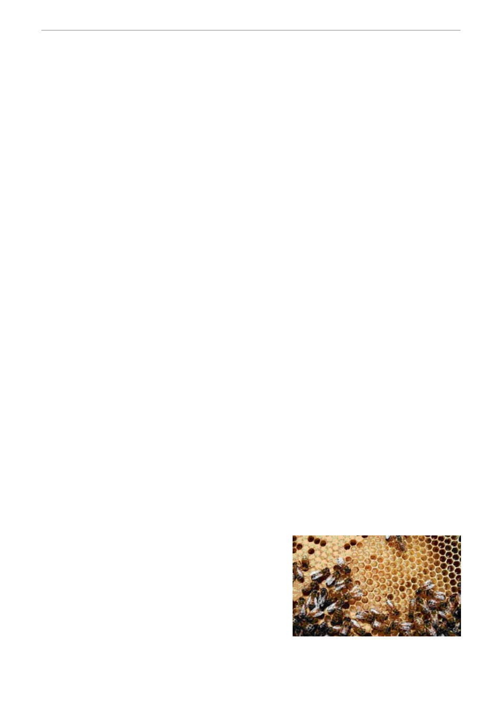

Next month (August) in the hive
(by Gary Montgomery)
August - Spring hive development
Hopefully your hives have come through the winter period successfully as a result of your following
appropriate winter management practices and checking the hives intermittently to assess the need
for any supplementary feeding by “lifting” them from the rear.
Proper hive management in early spring (September / October) is critical for maximizing success for
the forthcoming season.
Your hives now should be very carefully assessed in relation to the factors listed below.
First inspection after winter
This should only be carried out when it is a relatively warm day, there is little wind and foraging
bees are flying. Opening the hive when it is too cold, letting much of the hive warmth escape, and
“breaking up” the bee cluster inside the hive as you remove frames for inspection, will cause stress
to the bees. It may also result in a significant setback to brood development and a faster rate of use
of the remaining food stores, as the house bees consume more food to reheat the hive. Use of a
partial cover over the top of the hive as you carry out an inspection, will result in less heat loss.
Stores of honey and pollen
At the beginning of springtime food stores in the hive are at their lowest level. Foraging bees from
the hive will have become increasingly active, consuming more of the food stores for energy. With
increasing amounts of pollen and nectar being brought into the hive, there will be a sudden surge in
laying by the queen, resulting in significant brood development. One comb of honey, plus pollen
stores, is necessary for one comb of brood to successfully develop.
Further depletion of the scarce food resources occur at this time as the newly emerged young bees
are not yet able to forage, but require feeding.
Combined, the sudden growth of hive numbers, plus inadequate supplies of food, may result in an
apparently strongly developing hive to suddenly becoming significantly depleted in numbers, as the
bees die from lack of food. This is referred to as “spring dwindle.” Careful checking of the available
food stores can avert this problem.
Supplementary feeding by use of sugar syrup (see June “In the Hive”); or shifting the hive to a
location where adequate nectar flow is available, or taking a “spare” frame of honey from one hive
and transferring it to one that is in need of food, are all viable options. If the latter process is used,
extreme care must be taken to ensure you are not transferring disease from one hive to another!
The Queen and Brood
It is essential to check as early as possible in spring that
the hive has a fertile and vigorous queen. This can be
assessed by observing the laying pattern established. If
there is a uniform pattern of eggs, larvae and sealed
brood, the queen is performing up to expectation and
should be retained. There is no need to actually sight the
queen.